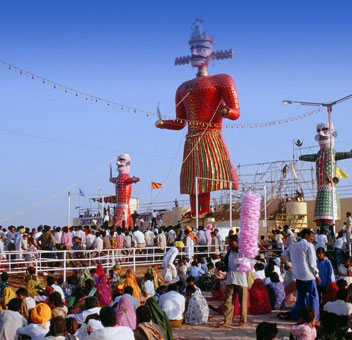

Dussehra :
Though celebrated across India, Dussehra in the hills is celebrated with the vigor it took the gods to mark the triumph of good over evil.
The weeklong ceremony is celebrated in the month of October to pay tribute to Lord Rama's
victory over Ravana.